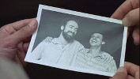

Aqueles dois
|  |
AQUELES DOIS Foto por Cesar Charlone: Beto Ruas e Pedro Wayne |
| Raul é extrovertido e brincalhão. Vem de um casamento frustrado e passa o tempo ouvindo e tocando melancólicos boleros no pequeno apartamento onde mora. Saul é tímido, de espírito crítico e amargo. Vem de um noivado tão interminável que um dia terminou. Também de uma recente tentativa de suicídio. Raul e Saul são duas pessoas simples, sensíveis, solitárias, e se conhecem no primeiro dia de trabalho em uma repartição pública. |
|
MÚSICA ("Vinheta Tu me acostumbraste", de Augusto Licks)
Direção: Sérgio Amon
Produção Executiva: Sérgio Lerrer
Roteiro: Sérgio Amon, Roberto Henkin e Pablo Vierci
Direção de Fotografia: Cesar Charlone
Música: Augusto Licks
Direção de Produção: Rudi Lagemann e Marlise Storchi
Montagem: Roberto Henkin e Sérgio Amon
Assistente de Direção: Giba Assis Brasil,Alex Sernambi e Rudi Lagemann
Distribuição: Casa de Cinema PoA
Elenco Principal:
Pedro Wayne (Saul)
Beto Ruas (Raul)
Suzana Saldanha (Clara Cristina)
Prêmios
-
1º Rio Cine Festival, 1985:
Prêmio Especial da Indústria Cinematográfica.
-
1º Festival do Cinema Brasileiro, Fortaleza, 1985:
Melhor Filme (Júri Oficial e Prêmio da Crítica), Melhor Fotografia, Melhor Ator Coadjuvante (Pedro Ruas), Melhor Música Original, Melhor Edição de Som
-
11th International Gay and Lesbian Film Festival, San Francisco, EUA, 1987
único filme brasileiro concorrente
Crítica
"Os gays estão assanhados. Baseado em um conto homônimo de Caio Fernando Abreu, (AQUELES DOIS) acompanha a sofrida trajetória de dois heterossexuais desiludidos - um com o casamento, o outro com um noivado encroado - que decidem morar juntos e fazer aquilo que, segundo d. Eugênio Salles, Deus resolveu castigar inventando a Aids. Ao fundo, embalando as angústias e os preconceitos de praxe, uma trilha sonora para nostálgico nenhum botar defeito: 'Tu me acostumbraste', 'Sabor a mi' e outros bolerões com que os masoquistas da década de 50 (gays ou heteros) apascentavam as suas dores de cotovelo."
(Sérgio Augusto, FOLHA DE SÃO PAULO, 09/08/85)"Dirigido com precisão e segurança por Sérgio Amon, (...) o filme explora com dignidade a relação afetiva entre dois homens para fazer, ao mesmo tempo, uma incursão poética ao problema da solidão aliada à carência afetiva nas grandes cidades, sem deixar de denunciar a intolerância humana. AQUELES DOIS surpreende pelos cuidados técnicos da produção, com destaque para a fotografia (de César Charlone), que registra imagens expressivas e cheias de ternura."
(Eduardo Vivacqua, O GLOBO, Rio de Janeiro, 10/08/85)"As chamadas pequenas criaturas estão permanentemente condenadas ao inferno do desinteresse? Sabe se através de exemplos inúmeros que não é bem assim, mas AQUELES DOIS, de Sérgio Amon, parece disposto a provar o contrário. (...) (O filme poderia) discutir o 'universo da repartição', a questão do homossexualismo, o desamor 'é um deserto de almas, diz se na cidade grande mas, na realidade, inexiste aqui qualquer tipo de vida inteligente. Fala-se muito e de forma primária para chegar a lugar algum."
(Wilson Cunha, JORNAL DO BRASIL, Rio de Janeiro, 10/08/85)"AQUELES DOIS foi a maior surpresa do Rio Cine Festival, o melhor filme brasiliero de 1985, pelo menos até agora. Embora esteja sendo vendido como uma história sobre homossexualismo, AQUELES DOIS é muito mais do que isso, é um filme sobre a própria condição humana, a solidão, o vazio, a insatisfação, a vida numa cidade grande. Sérgio Amon conseguiu ao mesmo tempo ser fiel ao conto de Caio Fernando Abreu e também expandi-lo, inclusive com uma conclusão mais aberta, mais otimista. O fato de o filme ser uma produção gaúcha, de fora do eixo Rio São Paulo, só lhe confere ainda maior charme, um encanto especial no sotaque, no comportamento da província. Outro mérito do filme é a segurança com que é conduzido o elenco, para nós desconhecido, mas de absoluta competência."
(Rubens Ewald Filho, O ESTADO DE SÃO PAULO, agosto de 1985)"O diretor (...) soube aproveitar a matéria-prima do conto, repleto de sugestões e sutilezas, e também o seu clima de intimismo e desencanto. Felizmente não caiu na tentação de transformar o conciso texto de Caio Fernando Abreu num love story gay. (...) No último plano, aqueles dois dão boas risadas como se dissessem 'não estamos nem aí', enquanto os colegas de repartição terminam, como no conto, 'infelizes para sempre'. E não custa destacar por fim a trilha sonora, tanto pelo adequado comentário musical de Augusto Licks quanto pela presença dos boleros na voz de Dalva de Oliveira."
(Sérgio Bazi, CORREIO BRASILIENSE, Brasília, 30/09/85)"A surpresa de AQUELES DOIS é seu olhar sem espanto, a sua naturalidade em tratar a relação entre os personagens centrais (esplendidamente interpretados por Pedro Wayne e Beto Ruas, dois atores gaúchos de teatro), simplesmente como uma possibilidade do relacionamento humano. (...) Na manipulação contida da emoção, na direção do elenco muito afinado, na escolha de bonitas imagens, na narrativa fluente (embora o final um pouco precipitado), AQUELES DOIS é o terceiro e melhor dos filmes realizados quase que simultaneamente pela mesma equipe no Rio Grande do Sul, após VERDES ANOS e ME BEIJA."
(Eduardo Pereira, O ESTADO DE SÃO PAULO, 02/10/85)"Com pouco mais de uma hora de duração, AQUELES DOIS revela se um filme de surpreendente densidade dramática. (...) A bravura do cineasta, enfrentando um tema tão difícil quanto o surgimento de uma possível relação homossexual entre dois sujeitos presumivelmente heterossexuais, demonstra se mais especialmente na contenção com que a história vai sendo armada do que nas explosões de temperamento dos personagens. (...) Os artifícios de que os roteiristas lançaram mão para encompridar a trama são eficientes, mas talvez não convincentes. (...) Talvez uma duração ainda menor condensasse mais a sua carga dramática, favorecendo o impacto."
(Tuio Becker, CORREIO DO POVO, Porto Alegre, 12/12/87)"Os meios tons, as grandes elipses, as cenas interrompidas, a narração 'off', a marcação visual da passagem do tempo transpõem para a tela a subjetividade e a sutileza de sentimentos do conto literário. O ritmo cadenciado do filme marca a passagem do que pode ser uma substituição às mulheres (a belíssima cena da dança na noite embriagada) para o que vem a se tornar uma relação insubstituível. O momento indefinível em que as pequenas afinidades tornam se as únicas grandes certezas. (...) Não há aqui a dor da fatalidade (da VERA de Sérgio Toledo) ou o elogio homoerótico (do CINEMA FALADO de Caetano Veloso). AQUELES DOIS não elege como único o caminho de Raul e Saul. Acena com a possibilidade do encontro das pessoas. Do direito de ser feliz, deixando para trás as almas infelizes e desamadas."
(Régis Muller, ZERO HORA, Porto Alegre, 15/12/87)
10/12/1987
| Anexo | Tamanho |
|---|---|
| Aqueles_dois.mp3 | 3.12 MB |